Tutorial 2: Interspecific Ecometabolomics
Tutorial_2_Interspecific_Comparisons.RmdDownload and run this tutorial: Tutorial_2_Interspecific_Comparisons.Rmd — open in RStudio and run chunks with Ctrl+Enter.
Overview
This tutorial introduces an interspecific ecometabolomics workflow using the eCOMET package to analyze multiple tree species that co-occur across a network of forest plots. We begin by comparing chemical richness and diversity across samples, then examine differences in overall composition using multivariate approaches such as hierarchical clustering, PCA, NMDS, and PCoA.
The first half of the tutorial uses feature-based methods, which treat each detected MZ-RT feature as an independent unit. These approaches are useful for summarizing the number of detected features and for comparing samples based on shared compound signals. However, this assumption is often imperfect in untargeted metabolomics because multiple detected features can arise from the same underlying metabolite through adducts, isotopes, or in-source fragments.
This limitation becomes especially important in interspecific datasets. Unlike treatment-based studies, where many compounds are shared among groups and the goal is to identify differential metabolites, species-level comparisons frequently involve samples that share relatively few exact features. As a result, similarity metrics based only on feature overlap can underestimate biologically meaningful relationships among samples.
To address this, the second half of the tutorial introduces structure-aware approaches that account for associations among features. These methods incorporate information from feature grouping, ion identity relationships, molecular networking, and chemical similarity so that samples can be compared not only by exact shared features, but also by the relatedness of the compounds they contain. This provides a more biologically realistic framework for interspecific metabolomic comparisons.
This tutorial is organized into the following sections:
- 1. Load input data and build the MMO object
- 2. Inspect the core data tables
- 3. Compare feature richness across samples and species
- 4. Add SIRIUS annotations and inspect class composition
- 5. Compare samples with feature-based multivariate methods
- 6. Add structural relationships among features
- 7. Recalculate beta diversity using chemical distances
- 8. Revisit alpha diversity with structure-aware metrics
- Key takeaways
The package can be installed or updated as needed using Pak:
#install
#pak::pak("phytoecia/eCOMET")
#upgrade
#pak::pak("phytoecia/eCOMET", upgrade = TRUE)1. Load input data and build the MMO object
The first step is to point eCOMET to the processed feature table, the sample metadata, and any optional annotation files that will be used later in the workflow.
Before calling GetMZmineFeature(), it is useful to understand what the mmo object is. In eCOMET, the mmo object is a container that keeps the feature matrix, feature metadata, sample metadata, and later annotation and distance information together in one place. This matters because most downstream functions expect these pieces to stay aligned. By storing them in a single object, we reduce the chance of mixing up sample order, dropping feature identifiers, or applying annotations to the wrong feature table.
data_dir <- system.file(
"extdata/tutorials/interspecific",
package = "ecomet"
)
stopifnot(nzchar(data_dir)) # fail loudly if package data is missing
demo_feature <- file.path(data_dir, "Ecomet_Interspecific_Demo_full_feature_table.csv")
demo_metadata <- file.path(data_dir, "EcoMET_Interspecific_Demo_metadata_no_blank.csv")
demo_sirius_formula <- file.path(data_dir, "canopus_formula_summary.tsv")
demo_sirius_structure <- file.path(data_dir, "structure_identifications.tsv")
demo_dreams <- file.path(data_dir, "Ecomet_Interspecific_Demo_dreams_sim_dreams.csv")Initialize eCOMET object
mmo <- GetMZmineFeature(mzmine_dir=demo_feature, metadata_dir = demo_metadata, group_col = 'Species_binomial', sample_col = "filename")
mmo
#> MMO object
#> Feature number: 3760
#> 56 samples in 10 groups
#> MMO object contains: feature_data, feature_info, pairwise, metadata, feature_presenceAfter this step, mmo becomes the main object passed through the rest of the tutorial. As you add normalization results, structural annotations, or chemical distances, they are stored within the same object and can be reused by later functions.
2. Inspect the core data tables
Building the mmo object creates several linked components. It is good practice to inspect these early so you know what information is available and can catch formatting problems before starting analysis.
2.1 Sample metadata
The sample metadata table describes each sample and records the grouping variables used in the analysis. This is the table to inspect when you want to confirm sample names, group assignments, replicate structure, or any additional sample-level covariates.
We are working with a dataset containing 10 species of tropical trees with 5-8 replicate samples for each species.
head(mmo$metadata)
#> filename Species_binomial Genus speciesCode mzmine_sample_type
#> 1 annRSS85_MDP0005.mzXML Annona RSS-85 Annona annRSS85 sample
#> 2 annRSS85_MDP0091.mzXML Annona RSS-85 Annona annRSS85 sample
#> 3 annRSS85_MDP0307.mzXML Annona RSS-85 Annona annRSS85 sample
#> 4 annRSS85_MDP0415.mzXML Annona RSS-85 Annona annRSS85 sample
#> 5 annRSS85_MDP0464.mzXML Annona RSS-85 Annona annRSS85 sample
#> 6 annRSS85_MDP0636.mzXML Annona RSS-85 Annona annRSS85 sample
#> Family sample sample_full_exact group
#> 1 Annonaceae annRSS85_MDP0005 annRSS85_MDP0005.mzXML Annona RSS-85
#> 2 Annonaceae annRSS85_MDP0091 annRSS85_MDP0091.mzXML Annona RSS-85
#> 3 Annonaceae annRSS85_MDP0307 annRSS85_MDP0307.mzXML Annona RSS-85
#> 4 Annonaceae annRSS85_MDP0415 annRSS85_MDP0415.mzXML Annona RSS-85
#> 5 Annonaceae annRSS85_MDP0464 annRSS85_MDP0464.mzXML Annona RSS-85
#> 6 Annonaceae annRSS85_MDP0636 annRSS85_MDP0636.mzXML Annona RSS-85When GetMZmineFeature() is called, group_col = "Species_binomial" tells eCOMET which metadata column should define the biological groups used throughout the analysis, and sample_col = "filename" tells it which metadata column matches the sample columns in the feature table. Those two mappings are what allow eCOMET to connect sample abundances to the correct species labels.
2.2 Feature information
The feature information table stores identifiers and per-feature descriptors. This is the table to inspect when you need to trace a feature back to its measured properties, match features across steps, or merge in annotation data.
head(mmo$feature_info)
#> id feature rt rt_range:min rt_range:max mz mz_range:min
#> 1 4 206.04484_0.6304 0.6304 0.0033 0.7531 206.0448 206.0436
#> 2 6 132.95824_0.5285 0.5285 0.5178 0.7674 132.9582 132.9575
#> 3 37 131.96147_0.5448 0.5448 0.3031 0.8025 131.9615 131.9608
#> 4 91 151.04493_0.5637 0.5637 0.3120 0.8119 151.0449 151.0445
#> 5 94 119.01877_0.5618 0.5618 0.3188 0.8027 119.0188 119.0182
#> 6 101 218.98332_0.5644 0.5644 0.4951 0.6238 218.9833 218.9826
#> mz_range:max feature_group ion_identities:iin_id
#> 1 206.0456 NA NA
#> 2 132.9587 NA NA
#> 3 131.9622 10 NA
#> 4 151.0456 10 NA
#> 5 119.0193 10 NA
#> 6 218.9844 10 NA
#> ion_identities:ion_identities
#> 1 <NA>
#> 2 <NA>
#> 3 <NA>
#> 4 <NA>
#> 5 <NA>
#> 6 <NA>This table is especially useful when you are troubleshooting missing annotations, checking ion identity groupings, or tracking how individual features behave across analysis steps.
2.3 Feature abundance matrix
The feature abundance matrix is the core quantitative table used for most diversity and ordination analyses. Each row is a detected feature, and each sample column contains its measured abundance.
mmo$feature_data[1:10,1:5]
#> id feature annRSS85_MDP0005 annRSS85_MDP0091 annRSS85_MDP0307
#> 1 4 206.04484_0.6304 12400.0 27720 36960
#> 2 6 132.95824_0.5285 0.0 0 163700
#> 3 37 131.96147_0.5448 242600.0 172000 79350
#> 4 91 151.04493_0.5637 301600.0 311300 398000
#> 5 94 119.01877_0.5618 973800.0 1135000 1437000
#> 6 101 218.98332_0.5644 229200.0 295900 838100
#> 7 130 232.9989_0.5648 210700.0 278800 720600
#> 8 200 170.05744_0.5943 455.4 1103 0
#> 9 204 249.04509_0.6028 1091000.0 1254000 1309000
#> 10 211 221.0419_0.6106 18610.0 0 16920The mmo object can also be filtered and subsetted. This creates a new object and updates the linked tables together, including the abundance matrix, feature information, and associated annotations. In practice, this is useful when you want to focus on a subset of species, samples, or features before plotting or calculating diversity. Many mmo functions also expose filtering arguments directly, so this same type of subsetting can often be applied on the fly without manually creating a separate object first.
#View the groups
#unique(mmo$metadata$group)
mmo_subset <- filter_mmo(mmo,group_list = unique(mmo$metadata$group)[1])This is the table you would inspect if you want to understand how intensities are organized, check whether zeros are present, or confirm that sample columns are aligned with the metadata.
3. Compare feature richness across samples and species
We begin with the most direct question: how many metabolite features are observed in each sample and in each species? This is an alpha diversity question because we are summarizing chemical diversity within samples or groups rather than comparing composition between them.
We can use GetAlphaDiversity() to calculate several diversity indices from the data. This function is based on the functional Hill framework, which means it can represent simple richness as well as measures that incorporate feature abundances and structural relationships among compounds.
There are three parts of GetAlphaDiversity() that are especially important to understand.
First, the mode argument controls which diversity metric is calculated. mode = "richness" counts detected features, mode = "unweighted" calculates Hill diversity without structural weighting, mode = "weighted" calculates functional Hill diversity using a distance matrix, and mode = "faith" calculates a Faith-style diversity measure using the supplied feature relationship matrix.
Second, the output argument controls the level at which results are summarized. In this tutorial we use sample-level values, group averages, group-cumulative richness, and rarefied sample-based summaries.
Third, the normalization argument tells the function which abundance table stored in the mmo object should be used for the calculation.
For simple richness, we are effectively asking: how many distinct features are present? In this setting, the analysis ignores structural similarity among compounds and focuses only on whether a feature is detected in a sample.
3.1 Sample-level richness
This first call calculates richness for each individual sample. This is useful when you want to see how much within-species variation exists among biological replicates before collapsing samples into species-level summaries.
sample_richness <- GetAlphaDiversity(
mmo,
mode = "richness",
threshold = 0,
output = "sample_level"
)
Sample_Richness <- ggplot2::ggplot(sample_richness, ggplot2::aes(x = group, y = value)) +
ggplot2::geom_boxplot(outlier.shape = NA, linewidth = 0.6) +
ggplot2::geom_jitter(width = 0.15, height = 0, alpha = 0.6, size = 1.8) +
ggplot2::labs(
title = "Feature Richness Across Tropical Tree Species",
x = "Species",
y = "Feature Richness"
) +
ggplot2::theme_classic(base_size = 12) +
ggplot2::theme(
plot.title = ggplot2::element_text(face = "bold", size = 13, hjust = 0.5),
axis.title = ggplot2::element_text(face = "bold", size = 12),
axis.text.y = ggplot2::element_text(face = "bold", size = 10),
axis.text.x = ggplot2::element_text(face = "bold.italic", size = 10,
angle = 45, hjust = 1),
axis.line = ggplot2::element_line(linewidth = 0.6),
axis.ticks = ggplot2::element_line(linewidth = 0.6)
)
Sample_Richness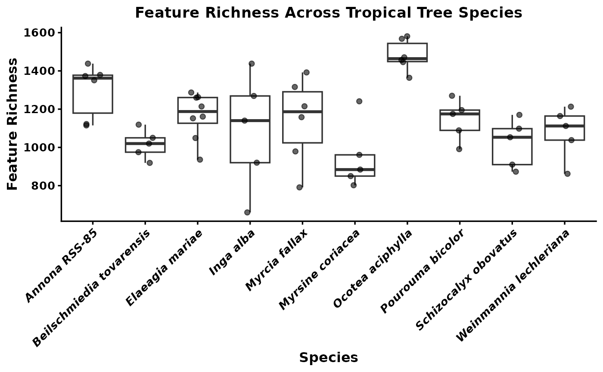
This plot shows the distribution of feature richness among samples within each species. If one species tends to have higher richness than another, that suggests it accumulates a broader set of detectable metabolites under the sampling conditions used here. Wide spread within a species indicates substantial among-sample variation, which can reflect biological heterogeneity, environmental effects, or analytical noise.
3.2 Group-average richness
The next summary moves from individual samples to the average richness of each species. This is useful when the goal is to compare species-level central tendencies rather than emphasize replicate-level spread.
group_mean_richness <- GetAlphaDiversity(
mmo,
mode = "richness",
threshold = 0,
output = "group_average",
ci = 0.95 # optional; controls lwr/upr quantiles in the summary
)
group_mean_richness
#> group mean sd n se lwr upr
#> 1 Annona RSS-85 1296.333 140.74327 6 57.45820 1115.875 1430.625
#> 2 Beilschmiedia tovarensis 1016.600 75.61283 5 33.81509 924.600 1112.100
#> 3 Elaeagia mariae 1165.250 120.70951 8 42.67726 955.775 1282.800
#> 4 Inga alba 1085.400 303.86642 5 135.89319 686.000 1421.100
#> 5 Myrcia fallax 1141.833 222.76931 6 90.94519 814.500 1382.500
#> 6 Myrsine coriacea 947.600 173.94913 5 77.79242 806.800 1213.000
#> 7 Ocotea aciphylla 1481.167 81.43566 6 33.24597 1374.250 1579.375
#> 8 Pourouma bicolor 1144.000 107.08875 5 47.89154 1000.800 1262.500
#> 9 Schizocalyx obovatus 1020.800 125.87573 5 56.29334 876.700 1162.800
#> 10 Weinmannia lechleriana 1077.800 136.96058 5 61.25063 879.600 1208.100Differences in average richness among species can be interpreted as differences in the typical number of detectable features per sample. This is often a better starting point for species comparisons than pooled richness because it does not automatically reward species with more replicate samples.
3.3 Group-cumulative richness
We can also calculate cumulative richness within each species by pooling observations across all of its samples. This asks a different question: how many distinct features have been observed for a species across the full set of sampled individuals?
group_pooled_richness <- GetAlphaDiversity(
mmo,
mode = "richness",
threshold = 0,
output = "group_cumulative",
pool_method = "sum"
)
group_pooled_richness
#> group value
#> 1 Annona RSS-85 2079
#> 2 Beilschmiedia tovarensis 1575
#> 3 Elaeagia mariae 1880
#> 4 Inga alba 1723
#> 5 Myrcia fallax 1934
#> 6 Myrsine coriacea 1520
#> 7 Ocotea aciphylla 2366
#> 8 Pourouma bicolor 1669
#> 9 Schizocalyx obovatus 1500
#> 10 Weinmannia lechleriana 1506Species with high cumulative richness may have either chemically diverse individuals or simply more opportunities to detect rare features across replicates. For teaching purposes, it is important to distinguish cumulative richness from average per-sample richness because they answer different biological questions.
3.4 Rarefied richness and accumulation curves
Finally, we can estimate accumulation curves by rarefying samples within each species. This shows how richness increases as more individuals are added and helps assess whether sampling is approaching saturation.
When output = "rarefied_sample", GetAlphaDiversity() works within each group separately. For each sampling depth k, it repeatedly draws k samples from that species without replacement, pools those samples, and recalculates the chosen alpha-diversity metric. It then summarizes the resulting distribution across permutations with a mean and confidence interval. In other words, the curve shows the expected richness for a species if you had collected 1, 2, 3, and so on up to all available samples.
group_rarefied_richness <- GetAlphaDiversity(
mmo,
mode = "richness",
threshold = 0,
output = "rarefied_sample",
n_perm = 200, # permutations for CI
ci = 0.95,
seed = 1,
pool_method = "sum"
)
head(group_rarefied_richness$raw)
#> group n_samples perm_id value
#> 1 Annona RSS-85 1 1 1379
#> 2 Annona RSS-85 1 2 1351
#> 3 Annona RSS-85 1 3 1379
#> 4 Annona RSS-85 1 4 1373
#> 5 Annona RSS-85 1 5 1122
#> 6 Annona RSS-85 1 6 1438
head(group_rarefied_richness$summary)
#> group n_samples mean lwr upr n_perm_eff
#> 1 Annona RSS-85 1 1340.333 1150.625 1430.625 6
#> 2 Annona RSS-85 2 1625.133 1503.800 1791.650 15
#> 3 Annona RSS-85 3 1812.900 1611.000 1953.000 20
#> 4 Annona RSS-85 4 1931.933 1807.650 1994.200 15
#> 5 Annona RSS-85 5 1986.167 1918.000 2053.375 6
#> 6 Annona RSS-85 6 2079.000 2079.000 2079.000 1
compound_accumlation_curve <- ggplot(group_rarefied_richness$summary,
aes(x = n_samples, y = mean, color = group, fill = group)) +
geom_ribbon(aes(ymin = lwr, ymax = upr), alpha = 0.2, color = NA) +
geom_line(linewidth = 0.8) +
geom_point(size = 2) +
labs(
title = "Feature Richness Accumulation by Species",
x = "Number of samples",
y = "Estimated feature richness",
color = "Species",
fill = "Species"
) +
theme_classic(base_size = 12) +
theme(
plot.title = element_text(face = "bold", size = 13, hjust = 0.5),
axis.title = element_text(face = "bold", size = 12),
axis.text = element_text(face = "bold", size = 10),
axis.line = element_line(linewidth = 0.6),
axis.ticks = element_line(linewidth = 0.6),
legend.title = element_text(face = "bold.italic", size = 10),
legend.text = element_text(face = "italic", size = 9)
)
compound_accumlation_curve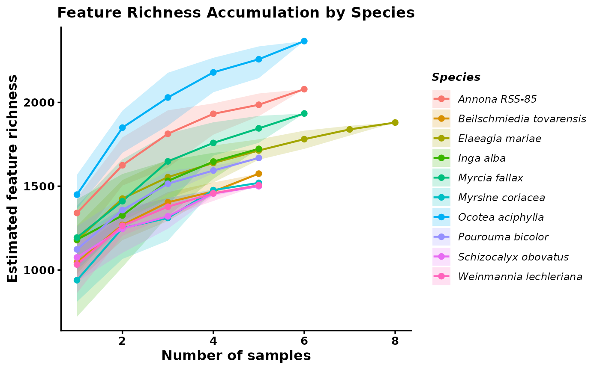
These outputs summarize both the expected richness at each sampling depth and the underlying permutation results. Curves that begin to plateau suggest that sampling is approaching the detectable richness of that species, whereas steeply increasing curves suggest that additional sampling would likely recover more features. This makes the curves useful for comparing species while accounting for differences in sample number.
Rarefaction_AUC <- RarefactionAUC(group_rarefied_richness, n_boot = 500)
Rarefaction_AUC_Plot <- ggplot(Rarefaction_AUC$auc_boot) +
geom_density(aes(x = auc, fill = group)) +
theme_classic()
Rarefaction_AUC_Plot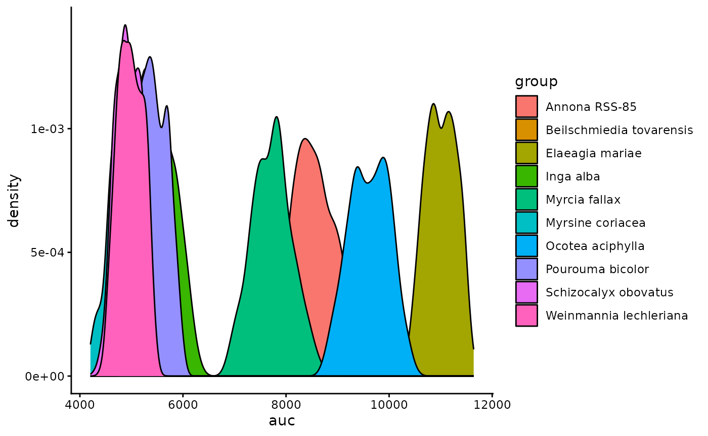
We can also summarize this by quantifying the area under the curve for each species.
4. Add SIRIUS annotations and inspect class composition
Richness tells us how many features are present, but it does not tell us what kinds of compounds those features may represent. The next step brings in SIRIUS-based annotations so we can begin summarizing chemical composition at a broader class level.
The main built-in annotation workflow is to load the outputs from SIRIUS. This allows us to import CANOPUS-predicted chemical classes for each feature, along with in silico structure predictions and their associated class assignments.
You can also add your own custom annotations if you have an external table that maps features to compound identities or classes.
#Add SIRIUS annotation
mmo <- AddSiriusAnnot(mmo, canopus_structuredir = demo_sirius_structure, canopus_formuladir = demo_sirius_formula)
mmo$sirius_annot4.1 Filter CANOPUS annotations by confidence
CANOPUS assigns posterior probabilities to each compound class prediction. We can filter out low-confidence predictions to improve the quality of downstream enrichment analyses.
First, let’s visualize the distribution of prediction confidence:
sirius_hist <- ggplot2::ggplot(
mmo$sirius_annot,
ggplot2::aes(x = .data[["NPC#pathway Probability"]])
) +
ggplot2::geom_histogram(bins = 40, fill = "steelblue", color = "white", linewidth = 0.3) +
ggplot2::labs(
title = "Distribution of NPC Pathway Probabilities",
x = "Probability",
y = "Count"
) +
ggplot2::theme_classic(base_size = 12) +
ggplot2::theme(
plot.title = ggplot2::element_text(face = "bold", size = 13, hjust = 0.5),
axis.title = ggplot2::element_text(face = "bold", size = 12),
axis.text = ggplot2::element_text(face = "bold", size = 10),
axis.line = ggplot2::element_line(linewidth = 0.6),
axis.ticks = ggplot2::element_line(linewidth = 0.6)
)
sirius_hist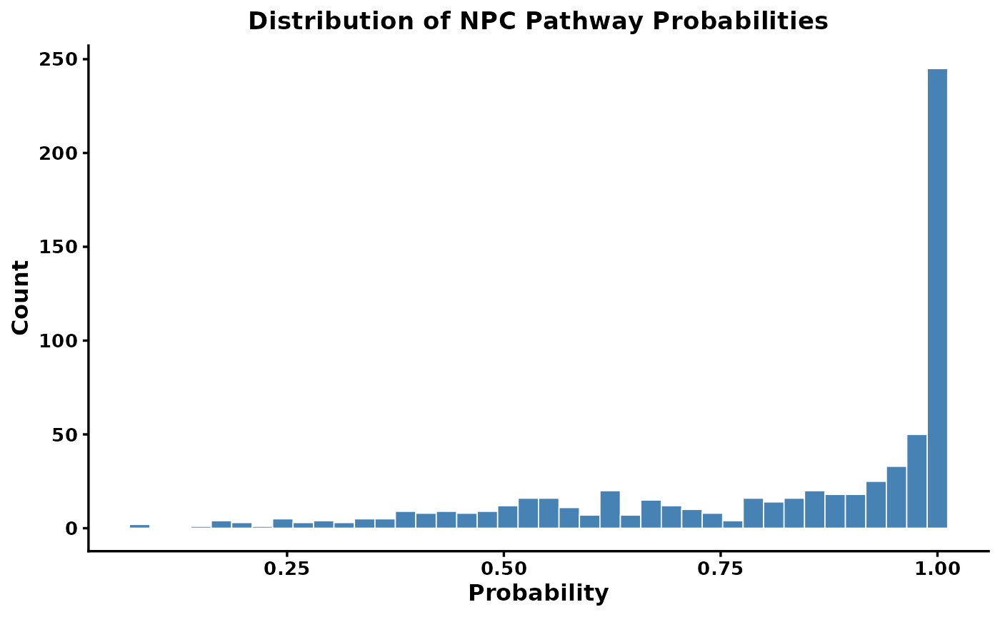
There is typically a long tail of low-confidence predictions. We can filter these using filter_canopus_annotations():
-
pathway_level: which classification levels to filter (e.g.,"NPC#pathway","All","All_NPC") -
threshold: minimum probability to retain (values below are set to NA) -
suffix: label for the filtered result
How to choose a threshold? There is no universal threshold. The SIRIUS documentation recommends using context-dependent thresholds. For statistical analyses, you can sum probabilities to get expected counts rather than applying a hard cutoff.
mmo <- filter_canopus_annotations(
mmo,
pathway_level = "NPC#pathway",
threshold = 0.8,
suffix = "NPC_pathway_0.8",
overwrite = TRUE
)
mmo$sirius_annot_filtered_NPC_pathway_0.84.2 Filter structure predictions by COSMIC confidence
SIRIUS structure predictions are scored by the COSMIC confidence score. These scores should be interpreted with caution — they are not probabilities. The SIRIUS team recommends focusing on the highest-confidence hits (e.g., top 5–10%).
# Replace -Infinity values with 0
mmo$sirius_annot_filtered_NPC_pathway_0.8$ConfidenceScoreApproximate[
which(mmo$sirius_annot_filtered_NPC_pathway_0.8$ConfidenceScoreApproximate == "-Infinity")
] <- 0
Cosmic_Scores <- as.numeric(
mmo$sirius_annot_filtered_NPC_pathway_0.8$ConfidenceScoreApproximate
)
cosmic_hist <- ggplot2::ggplot(
data.frame(score = Cosmic_Scores),
ggplot2::aes(x = score)
) +
ggplot2::geom_histogram(bins = 40, fill = "steelblue", color = "white", linewidth = 0.3) +
ggplot2::labs(
title = "COSMIC Confidence Scores for Structures",
x = "Confidence Score",
y = "Count"
) +
ggplot2::theme_classic(base_size = 12) +
ggplot2::theme(
plot.title = ggplot2::element_text(face = "bold", size = 13, hjust = 0.5),
axis.title = ggplot2::element_text(face = "bold", size = 12),
axis.text = ggplot2::element_text(face = "bold", size = 10)
)
cosmic_hist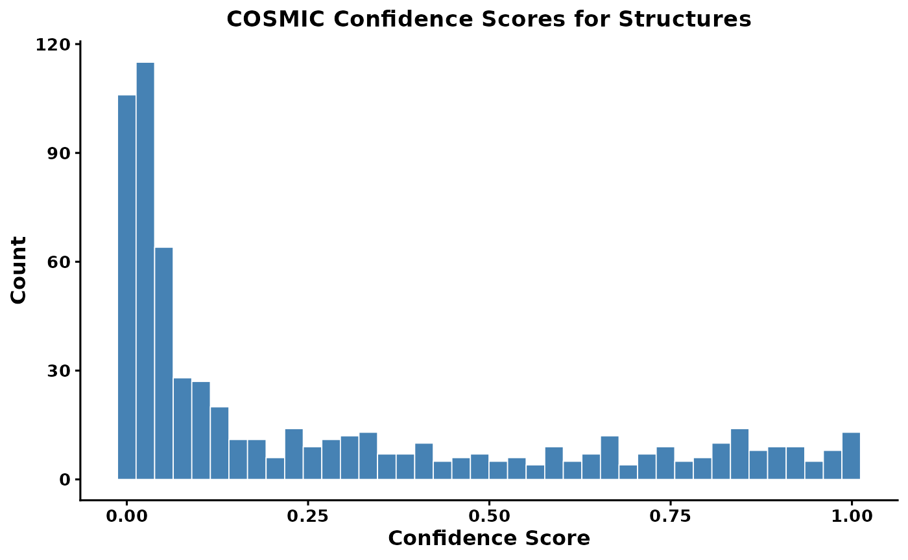
Find the threshold for the top 10% of scores
quantile(x = Cosmic_Scores, probs = 0.9, na.rm = TRUE)
#> 90%
#> 0.8371
mmo <- filter_cosmic_structure(
mmo,
input = "sirius_annot_filtered_NPC_pathway_0.8",
cosmic_mode = "approx",
threshold = 0.3892,
suffix = "CANOPUS_0.8_COSMIC_Top_10"
)Now that we have annotations we can calculate the richness per compound class. The PlotNPCStackedBar will generate a plot to do just that.
4.3 Generate a NPClassifier based stacked barplot
For functions plotting functions we give the option to save the plot directly by providing an outdir, and setting save_output = T. Otherwise it will return a ggplot object that can be further modified.
mmo_stacked_bar <- PlotNPCStackedBar(mmo,
group_col = 'Species_binomial',
outdir = 'NPC_stakced_bar.pdf',
width = 8, height =4,
save_output = FALSE)
#> [1] "Group column switched to Species_binomial"
#> [1] "10 groups in total"
#> [1] "The list of groups are: Annona RSS-85, Beilschmiedia tovarensis, Elaeagia mariae, Inga alba, Myrcia fallax, Myrsine coriacea, Ocotea aciphylla, Pourouma bicolor, Schizocalyx obovatus, Weinmannia lechleriana"
#Note that the plot is returned as a ggplot object so it can be easily modified by adding + to the object
p_stacked <- mmo_stacked_bar$plot +
ggplot2::labs(
title = "NPC Compound Class Composition\n Across Tropical Tree Species",
x = "Species",
y = "Feature Richness",
fill = "NPC Pathway"
) +
ggplot2::theme_classic(base_size = 12) +
ggplot2::theme(
plot.title = ggplot2::element_text(face = "bold", size = 13, hjust = 0.5),
axis.title = ggplot2::element_text(face = "bold", size = 12),
axis.title.y = ggplot2::element_blank(),
axis.text.y = ggplot2::element_text(face = "bold", size = 10),
axis.text.x = ggplot2::element_text(face = "bold.italic", size = 10,
angle = 45, hjust = 1),
axis.line = ggplot2::element_line(linewidth = 0.6),
axis.ticks = ggplot2::element_line(linewidth = 0.6),
legend.title = ggplot2::element_text(face = "bold", size = 10),
legend.text = ggplot2::element_text(size = 9),
legend.position = "right"
)
p_stacked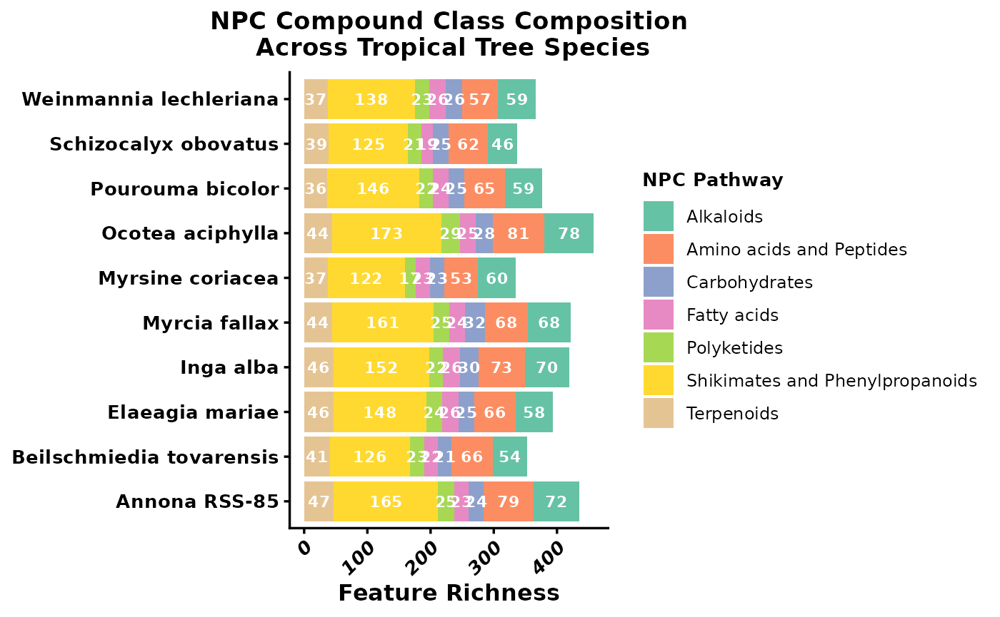
5. Compare samples with feature-based multivariate methods
Before introducing structure-aware methods, it is helpful to start with standard multivariate approaches that treat each feature as an independent variable. These methods mainly reward exact overlap in detected features or their abundances. That is a useful baseline, but it can be limiting in interspecific metabolomics because different species may produce different features that are nevertheless chemically related.
5.1 PCA
PCA is a feature-based ordination method that reduces the dimensionality of the abundance matrix. Here it provides a first look at whether samples from the same species cluster together when each detected feature is treated as an independent variable.
Choosing a normalization for PCA
PCA is sensitive to differences in feature magnitude — in LC-MS data, peak areas routinely span four to six orders of magnitude. Without scaling, a single highly abundant compound can dominate the first principal component, and the ordination ends up summarizing little more than “how much of that one compound is there.”
PCAplot() accepts a normalization argument that controls how the feature table is scaled before PCA is run. The main options are:
| Option | What it does | When to use |
|---|---|---|
"Z" |
Z-score: mean = 0, SD = 1 per feature | Equal weight to all features; good for detecting subtle variation in rare compounds |
"Log" |
Log10 transformation | Compresses dynamic range while preserving relative abundance differences |
"PA" |
Presence/absence | Ignores abundance entirely; purely compositional |
"None" |
Raw peak areas | Only appropriate if you have already normalized externally |
Z-score is the most aggressive equalizer. Every feature — abundant or trace — contributes equally to the PCA. The tradeoff is that noisy low-abundance features are up-weighted alongside well-measured ones.
Log transformation compresses the dynamic range without fully equalizing features. Compounds that are genuinely more abundant still have proportionally more influence, which is often more ecologically meaningful when dominant compounds drive a species’ chemistry.
For this interspecific comparison, we use normalization = "Log" to preserve relative abundance information while bringing outlier features closer to the range of the rest of the matrix. We also remove features with zero variance across samples, which would cause PCA to fail.
# Remove zero-variance features (cause PCA to fail regardless of normalization)
zero_variance <- apply(mmo$feature_data[, -(1:2)], 1, var) == 0
features_to_keep <- mmo$feature_data$id[!zero_variance]
mmo <- filter_mmo(mmo, id_list = features_to_keep)
#add normalization
mmo <- MeancenterNormalization(mmo)
mmo <- LogNormalization(mmo)
#> [1] "Log-normalized values were added to mmo$log"
mmo <- ZNormalization(mmo)
groups <- unique(mmo$metadata$group)
custom_colors <- setNames(
grDevices::colorRampPalette(RColorBrewer::brewer.pal(12, "Set3"))(length(groups)),
groups
)
mmo_pca <- PCAplot(mmo, color = custom_colors,
normalization = "Log", label = FALSE, save_output = FALSE)
mmo_pca$plot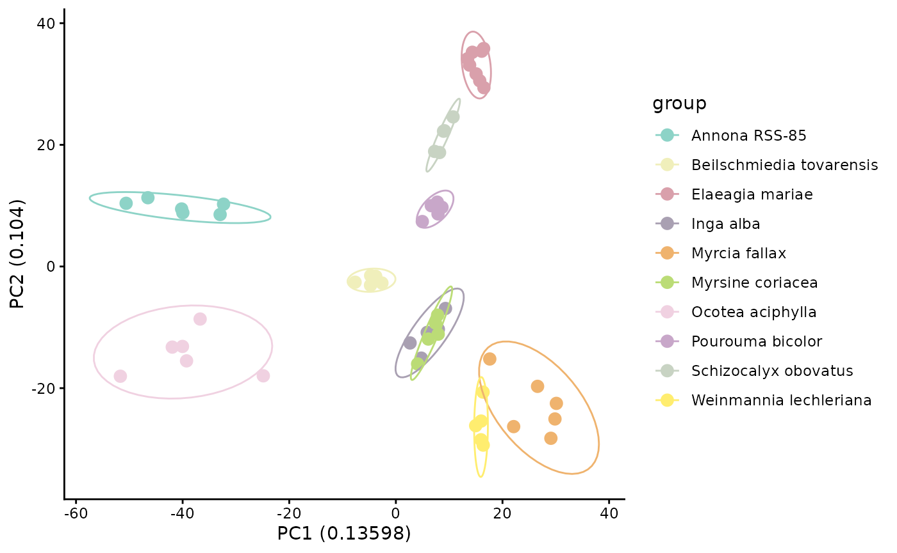
If samples from the same species cluster together in PCA space, that suggests species differ in their overall multivariate chemical profiles. However, PCA still depends on the observed feature matrix and does not account for structural relatedness among unshared compounds.
5.2 Bray-Curtis hierarchical clustering
Bray-Curtis is another feature-based approach, but here it is used as a distance measure for hierarchical clustering. Like PCA, it is based on the abundance matrix and emphasizes observed overlap and abundance differences among detected features.
We use GetBetaDiversity(), which like GetAlphaDiversity() can calculate several different diversity measures through a common interface. Here we apply "bray", which is feature-based and does not require a distance matrix between compounds.
We generate a distance matrix and pass it directly to HCplot(), which handles clustering and produces a phylogram with tips colored by species group.
beta_diversity_dreams_bray <- GetBetaDiversity(mmo, method = 'bray',
normalization = 'Log')
hc_bray <- HCplot(
mmo,
betadiv = beta_diversity_dreams_bray,
outdir = "output/T2_hc_bray",
color = custom_colors,
save_output = FALSE
)
# Publication-ready customisation
hc_bray_plot <- hc_bray$plot +
ggplot2::theme(
plot.title = ggplot2::element_text(face = "bold", size = 13, hjust = 0.5),
legend.title = ggplot2::element_text(face = "bold", size = 11),
legend.text = ggplot2::element_text(face = "italic", size = 10)
) +
ggplot2::labs(title = "Sample Similarity\n(Bray-Curtis, structurally unweighted)")
hc_bray_plot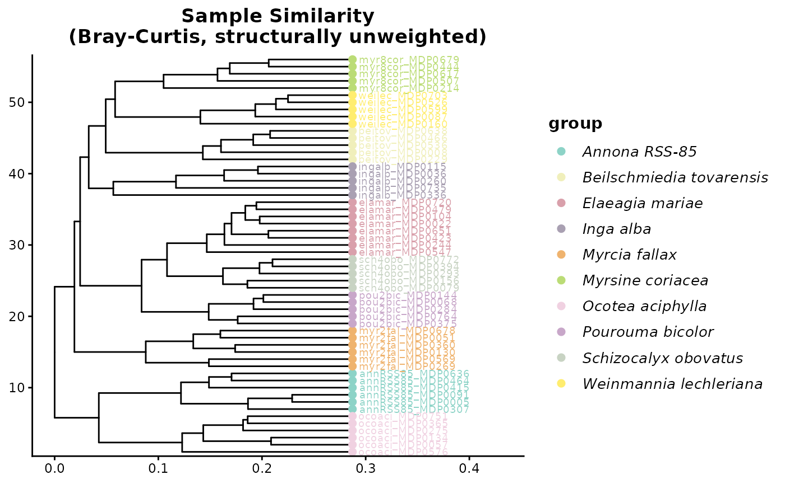
You can see that Bray Curtis distance is grouping species into their own clusters well. This is because most species do not share features and thus form unique clusters.
This is an important teaching moment. Strong species-level clustering under Bray-Curtis can reflect real chemical differentiation, but it can also be driven by the fact that many species do not share exact features at all. In that situation, feature-overlap methods may exaggerate separation even when species produce structurally related metabolites.
6. Add structural relationships among features
Feature-overlap metrics become limited when most compounds are unique to one species. Two species may appear completely dissimilar even if they produce related compounds from the same biosynthetic pathways. To address that limitation, we next add chemical distance information derived from DREAMS so that similarity can be evaluated among compounds, not just among exact matching features.
We introduce feature-based molecular networking and compound dendrograms that group mz-features into structurally similar groups on a tree.
# Add Dreams distance
mmo <- AddChemDist(mmo, dreams_dir = demo_dreams)
mmo$dreams.dissim[1:10,1:10]
#> 4 37 91 94 101 130 200 204 211 213
#> 4 0.000 0.751 1.000 1.000 0.775 0.659 1.000 0.647 0.827 0.772
#> 37 0.751 0.000 1.000 0.730 0.738 0.733 0.786 1.000 0.720 1.000
#> 91 1.000 1.000 0.000 0.255 0.688 0.552 1.000 0.622 0.774 1.000
#> 94 1.000 0.730 0.255 0.000 0.585 0.522 1.000 0.585 0.683 0.694
#> 101 0.775 0.738 0.688 0.585 0.000 0.171 1.000 0.600 0.587 0.703
#> 130 0.659 0.733 0.552 0.522 0.171 0.000 1.000 0.548 0.569 0.730
#> 200 1.000 0.786 1.000 1.000 1.000 1.000 0.000 1.000 1.000 1.000
#> 204 0.647 1.000 0.622 0.585 0.600 0.548 1.000 0.000 0.607 0.555
#> 211 0.827 0.720 0.774 0.683 0.587 0.569 1.000 0.607 0.000 0.442
#> 213 0.772 1.000 1.000 0.694 0.703 0.730 1.000 0.555 0.442 0.000This matrix stores pairwise chemical dissimilarity among features. Once this information is available, later analyses can distinguish between features that are unrelated and features that are distinct but still structurally similar.
7. Recalculate beta diversity using chemical distances
Now that we have a matrix describing relationships among compounds, we can recalculate sample-to-sample dissimilarity in a way that uses chemical relatedness among unshared features. This is the key conceptual shift in the tutorial: samples no longer need to share the exact same detected feature to be considered chemically similar.
A note on controlling feature abundance in GetBetaDiversity()
Each method in GetBetaDiversity() treats feature abundance differently, and the levers available to you depend on which method you are using.
Bray-Curtis (
method = "bray"): Abundance is used directly in the dissimilarity formula. You control how much influence high-abundance features have through thenormalizationargument.normalization = "None"uses raw peak areas,normalization = "Log"compresses the dynamic range so that very abundant features have less outsized influence, andnormalization = "PA"converts everything to presence/absence so abundance is ignored entirely.Jaccard (
method = "jaccard"): Jaccard is a presence/absence measure by definition. Thenormalizationargument is ignored — the function always uses the presence/absence table internally and will issue a warning if you supply anything else. This means Jaccard answers the question: do these two samples detect the same compounds at all, regardless of how much of each compound is present?CSCS (
method = "CSCS"): Like Bray-Curtis, CSCS is sensitive to abundance by default and you control that sensitivity throughnormalization. The key difference from Bray-Curtis is that CSCS also uses the compound distance matrix, so structurally related features that are not identical can still contribute to similarity.normalization = "None"makes highly abundant features drive the CSCS score;normalization = "PA"makes it a purely structural comparison based on which chemical neighborhoods are represented.-
Generalized UniFrac (
method = "Gen.Uni"): This method computes three distance matrices in a single pass, each with a different abundance-weighting level controlled by an internalalphaparameter. Rather than choosing one upfront,GetBetaDiversity()returns all three as a named list so you can compare or choose the most appropriate one:-
d_0: presence/absence only — equivalent to unweighted UniFrac. Use this when you want to know whether the same chemical branches are represented, regardless of how much of each compound is present. -
d_0.5: balanced weighting (recommended starting point). Moderates the influence of highly abundant features without ignoring abundance entirely. -
d_1: fully abundance-weighted. Dominant features drive the distance. Use this when peak intensity is a reliable biological signal and you want the most abundant compounds to have the most influence.
-
We present two structure-aware methods below:
7.1 Chemical structural and compositional similarity (CSCS)
CSCS incorporates relationships among compounds when calculating dissimilarity. Two samples can therefore be considered more similar if they contain different features that are nonetheless chemically related.
beta_diversity_dreams_CSCS <- GetBetaDiversity(mmo, method = 'CSCS',
normalization = 'Log', distance = "dreams")
hc_cscs <- HCplot(
mmo,
betadiv = beta_diversity_dreams_CSCS,
outdir = "output/HC_CSCS",
hclust_method = "ward.D2",
color = custom_colors,
save_output = FALSE
)
hc_cscs$plot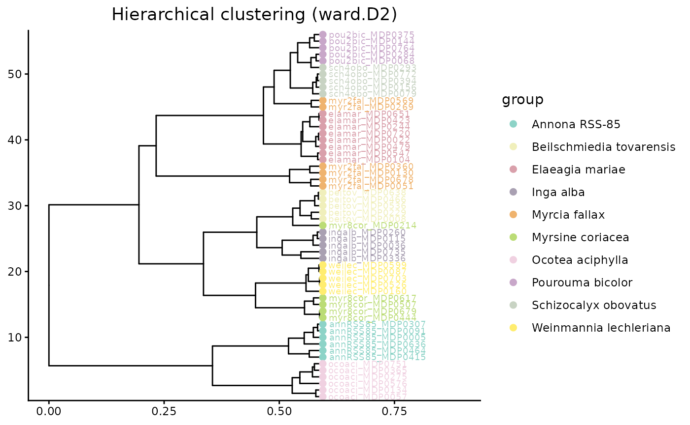
Relative to Bray-Curtis, CSCS should often reduce the apparent distance between samples that lack shared exact features but still contain compounds from similar chemical neighborhoods.
7.2 Generalized UniFrac
Generalized UniFrac uses the feature dendrogram to partition differences among samples across branches of the chemical tree. Instead of asking only whether the same features are present, it asks how much chemical branch length is shared or unique across samples.
beta_diversity_dreams_Gen.Uni <- GetBetaDiversity(mmo, method = 'Gen.Uni',
normalization = 'Log', distance = "dreams")
#> Accumulate the abundance along the tree branches...
#> Compute pairwise distances ...
#> Completed!
# GetBetaDiversity() prints a message listing the three available matrices.
# Inspect the names:
# Choose one weighting level before passing to HCplot.
# Here we use d_1 (abundance-weighted), which is the recommended default.
hc_GenUni <- HCplot(
mmo,
betadiv = beta_diversity_dreams_Gen.Uni[["d_1"]],
outdir = "output/HC_GenUni",
hclust_method = "ward.D2",
color = custom_colors,
save_output = FALSE
)
hc_GenUni$plot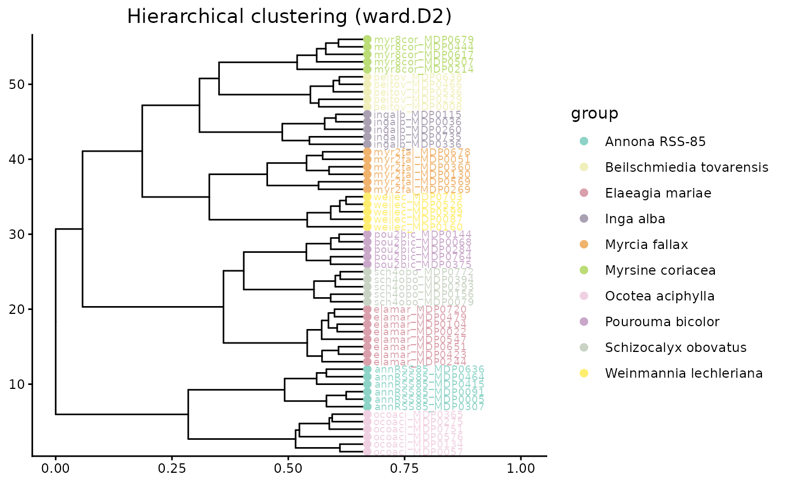
Both CSCS and Generalized UniFrac move beyond exact feature overlap. In an interspecific dataset, that is often the biologically appropriate comparison because species can produce different compounds that still belong to related structural classes.
7.3 Ordination using structure-aware distances
We can use these distance matrices directly in ordination methods such as NMDS and PCoA. These plots summarize multivariate dissimilarity among samples in a low-dimensional space.
groups <- unique(mmo$metadata$group)
custom_colors <- setNames(grDevices::colorRampPalette(RColorBrewer::brewer.pal(12, "Set3"))(length(groups)), groups)
NMDS <- NMDSplot(mmo, color= custom_colors,betadiv = beta_diversity_dreams_CSCS,
outdir = 'output/NMDS',
width = 6, height = 6,
save_output = FALSE)
NMDS$plot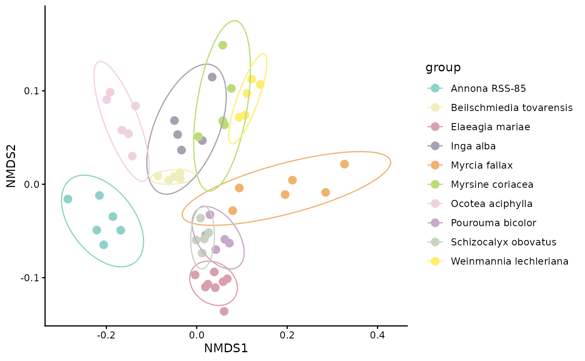
In an NMDS plot, points that are closer together represent samples with more similar chemical profiles under the chosen distance metric. If samples from the same species cluster tightly and species separate from one another, that suggests consistent species-level differences in chemistry. Overlap among species indicates greater similarity or weaker taxonomic structure.
We can also visualize beta diversity in a PCoA plot. Here we use Generalized UniFrac (d_1) to show a structure-aware ordination.
PCOA_example <- PCoAplot(mmo, color = custom_colors,
betadiv = beta_diversity_dreams_Gen.Uni[["d_1"]],
outdir = "output/PCOA",
width = 6, height = 6,
save_output = FALSE)
PCOA_example$plot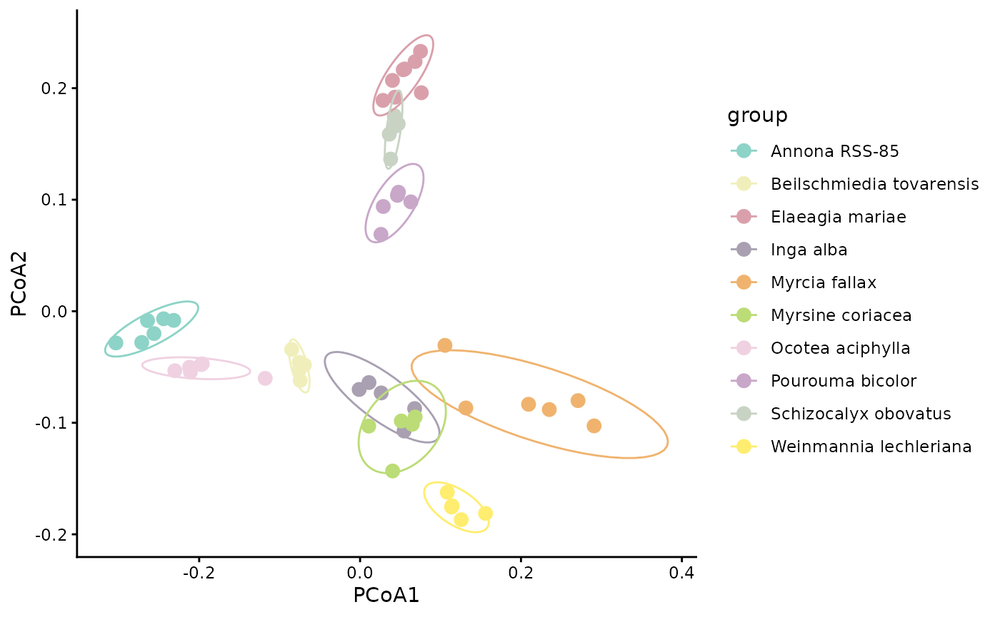
PCoA axes are derived from the distance matrix directly, so the axes reflect the chosen beta diversity metric. Ordinations based on structure-aware distances summarize chemistry after incorporating relationships among compounds, not just exact shared features.
To compare how clusters differ when we incorporate structurally weighted beta distances, we place Bray-Curtis and CSCS PCoAs side by side. CSCS is the more informative contrast with Bray-Curtis because it uses the same abundance framework but adds chemical structure — so any shift in clustering reflects structural weighting rather than a change in diversity metric. Because the two distance matrices are on different scales, each panel has free axes — interpret only the relative grouping of points across panels, not the axis values.
PCOA_example_bray <- PCoAplot(
mmo,
color = custom_colors,
betadiv = beta_diversity_dreams_bray,
outdir = "output/PCOA_bray",
save_output = FALSE
)
PCOA_example_cscs <- PCoAplot(
mmo,
color = custom_colors,
betadiv = beta_diversity_dreams_CSCS,
outdir = "output/PCOA_cscs",
save_output = FALSE
)
# Combine data frames and label by method
pcoa_bray_df <- PCOA_example_bray$df
pcoa_bray_df$method <- "Bray-Curtis"
pcoa_cscs_df <- PCOA_example_cscs$df
pcoa_cscs_df$method <- "CSCS\n(structurally weighted)"
pcoa_combined <- rbind(pcoa_bray_df, pcoa_cscs_df)
pcoa_combined$method <- factor(pcoa_combined$method,
levels = c("Bray-Curtis", "CSCS\n(structurally weighted)"))
# Faceted comparison — publication figure
pcoa_comparison <- ggplot2::ggplot(
pcoa_combined,
ggplot2::aes(x = .data$PCoA1, y = .data$PCoA2, color = .data$group)
) +
ggplot2::geom_point(size = 3) +
ggplot2::stat_ellipse(level = 0.90) +
ggplot2::scale_color_manual(values = custom_colors, name = "Species") +
ggplot2::facet_wrap(~ method, scales = "free") +
ggplot2::theme_classic(base_size = 12) +
ggplot2::theme(
strip.text = ggplot2::element_text(face = "bold", size = 12),
legend.position = "right",
axis.title = ggplot2::element_text(face = "bold"),
legend.text = ggplot2::element_text(face = "italic")
) +
ggplot2::labs(
x = "PCoA1",
y = "PCoA2",
title = "Beta Diversity: Feature-based vs. Structurally-weighted"
)
pcoa_comparison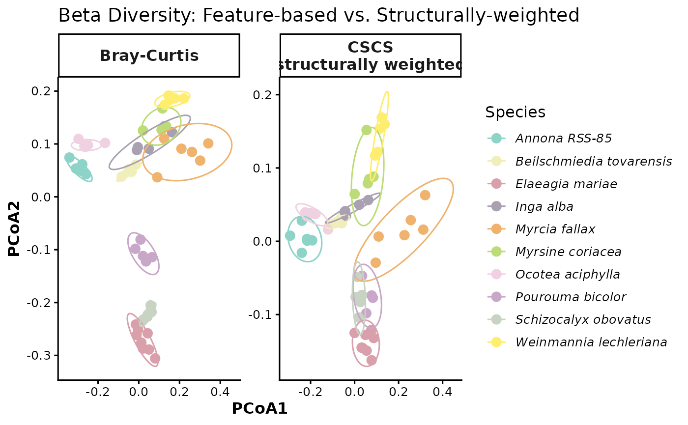
8. structure-aware alpha diversity
So far, our alpha diversity summaries have treated each feature as equally distinct. We now revisit alpha diversity using structure-aware information so that chemically similar compounds do not contribute as much unique diversity as chemically distant compounds. This gives a more functional view of chemical diversity within each sample or species.
group_mean_functionalhill <- GetAlphaDiversity(
mmo,
normalization = "Log",
distance = "dreams",
mode = "weighted",
threshold = 0,
output = "sample_level",
ci = 0.95 # optional; controls lwr/upr quantiles in the summary
)
group_mean_functionalhill
#> sample group value
#> 1 annRSS85_MDP0005 Annona RSS-85 1753206.3
#> 2 annRSS85_MDP0091 Annona RSS-85 1753582.5
#> 3 annRSS85_MDP0307 Annona RSS-85 1910780.5
#> 4 annRSS85_MDP0415 Annona RSS-85 1687474.2
#> 5 annRSS85_MDP0464 Annona RSS-85 1133026.8
#> 6 annRSS85_MDP0636 Annona RSS-85 1104330.2
#> 7 beitov_MDP0008 Beilschmiedia tovarensis 1145308.3
#> 8 beitov_MDP0229 Beilschmiedia tovarensis 863457.4
#> 9 beitov_MDP0466 Beilschmiedia tovarensis 733205.4
#> 10 beitov_MDP0536 Beilschmiedia tovarensis 975442.8
#> 11 beitov_MDP0638 Beilschmiedia tovarensis 898505.6
#> 12 elamar_MDP0022 Elaeagia mariae 1335654.3
#> 13 elamar_MDP0104 Elaeagia mariae 965135.2
#> 14 elamar_MDP0244 Elaeagia mariae 1161497.1
#> 15 elamar_MDP0423 Elaeagia mariae 1199102.1
#> 16 elamar_MDP0479 Elaeagia mariae 1425507.3
#> 17 elamar_MDP0547 Elaeagia mariae 759208.8
#> 18 elamar_MDP0651 Elaeagia mariae 1401670.5
#> 19 elamar_MDP0720 Elaeagia mariae 1483933.4
#> 20 ingalb_MDP0036 Inga alba 1483835.3
#> 21 ingalb_MDP0115 Inga alba 1919854.4
#> 22 ingalb_MDP0260 Inga alba 1191965.2
#> 23 ingalb_MDP0336 Inga alba 371055.3
#> 24 ingalb_MDP0735 Inga alba 730737.8
#> 25 myr2fal_MDP0051 Myrcia fallax 1304563.6
#> 26 myr2fal_MDP0130 Myrcia fallax 511474.6
#> 27 myr2fal_MDP0269 Myrcia fallax 1740573.4
#> 28 myr2fal_MDP0360 Myrcia fallax 800080.7
#> 29 myr2fal_MDP0569 Myrcia fallax 1530809.8
#> 30 myr2fal_MDP0678 Myrcia fallax 1130863.6
#> 31 myr8cor_MDP0214 Myrsine coriacea 1387676.2
#> 32 myr8cor_MDP0444 Myrsine coriacea 664712.9
#> 33 myr8cor_MDP0507 Myrsine coriacea 598500.2
#> 34 myr8cor_MDP0617 Myrsine coriacea 521899.8
#> 35 myr8cor_MDP0679 Myrsine coriacea 777342.7
#> 36 ocoaci_MDP0057 Ocotea aciphylla 1998877.3
#> 37 ocoaci_MDP0134 Ocotea aciphylla 2316543.2
#> 38 ocoaci_MDP0275 Ocotea aciphylla 1713947.2
#> 39 ocoaci_MDP0365 Ocotea aciphylla 2351181.2
#> 40 ocoaci_MDP0576 Ocotea aciphylla 1909361.5
#> 41 ocoaci_MDP0751 Ocotea aciphylla 1991312.3
#> 42 pou2bic_MDP0068 Pourouma bicolor 1468636.9
#> 43 pou2bic_MDP0144 Pourouma bicolor 1050802.0
#> 44 pou2bic_MDP0284 Pourouma bicolor 1242546.6
#> 45 pou2bic_MDP0375 Pourouma bicolor 856883.5
#> 46 pou2bic_MDP0764 Pourouma bicolor 1244316.4
#> 47 sch4obo_MDP0079 Schizocalyx obovatus 683229.4
#> 48 sch4obo_MDP0156 Schizocalyx obovatus 734315.8
#> 49 sch4obo_MDP0293 Schizocalyx obovatus 1230012.7
#> 50 sch4obo_MDP0394 Schizocalyx obovatus 979810.3
#> 51 sch4obo_MDP0772 Schizocalyx obovatus 1031886.6
#> 52 weilec_MDP0087 Weinmannia lechleriana 1301957.8
#> 53 weilec_MDP0160 Weinmannia lechleriana 638061.9
#> 54 weilec_MDP0526 Weinmannia lechleriana 915838.3
#> 55 weilec_MDP0599 Weinmannia lechleriana 1170650.2
#> 56 weilec_MDP0703 Weinmannia lechleriana 1045505.5Compare the structure-aware ordination from a feature only
sample_hill_number <- ggplot2::ggplot(group_mean_functionalhill, ggplot2::aes(x = group, y = value)) +
ggplot2::geom_boxplot(outlier.shape = NA) +
ggplot2::geom_jitter(width = 0.15, height = 0, alpha = 0.6) +
ggplot2::labs(
x = "Species",
y = "Functional Hill Number"
) +
ggplot2::theme_classic() +
ggplot2::theme(
axis.text.x = element_text(angle = 90, hjust = 0.5)
)+
scale_y_log10()
p1 <- Sample_Richness +
theme(
axis.title.x = element_blank(),
axis.text.x = element_blank(),
axis.ticks.x = element_blank(),
plot.margin = margin(t = 5.5, r = 5.5, b = 0, l = 5.5)
)
p2 <- sample_hill_number +
theme(
plot.margin = margin(t = 0, r = 5.5, b = 5.5, l = 5.5)
)
combined_plot <- plot_grid(
p1,
p2,
ncol = 1,
align = "v",
axis = "lr",
rel_heights = c(1, 2.5)
)
combined_plot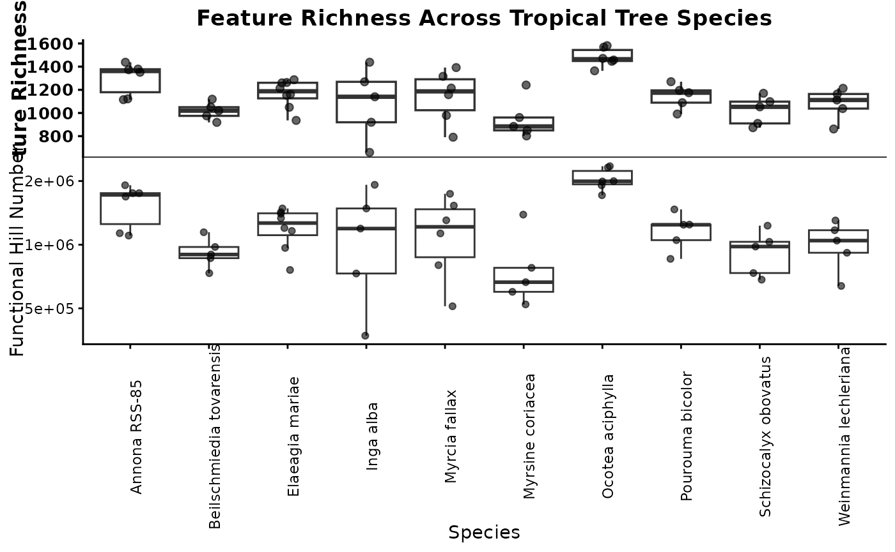
If richness counts every detected feature equally, structure-aware diversity asks whether those features represent many different kinds of chemistry or many closely related variants of the same chemistry. Species with similar raw richness can therefore differ in functional Hill diversity if one contains a broader range of chemical types.
rarefied_functionalhill <- GetAlphaDiversity(
mmo,
normalization = "Log",
distance = "dreams",
mode = "weighted",
threshold = 0,
output = "rarefied_sample",
ci = 0.95, # optional; controls lwr/upr quantiles in the summary
n_perm = 200,
seed = 1,
pool_method = "sum",
q = 1
)
head(rarefied_functionalhill$summary)
#> group n_samples mean lwr upr n_perm_eff
#> 1 Annona RSS-85 1 1618816 1166059 1836639 6
#> 2 Annona RSS-85 2 2086032 1786714 2524320 15
#> 3 Annona RSS-85 3 2395699 1853452 2764308 20
#> 4 Annona RSS-85 4 2526602 2254960 2706734 15
#> 5 Annona RSS-85 5 2552918 2436951 2730872 6
#> 6 Annona RSS-85 6 2669040 2669040 2669040 1
head(rarefied_functionalhill$raw)
#> group n_samples perm_id value
#> 1 Annona RSS-85 1 1 1716417
#> 2 Annona RSS-85 1 2 1624375
#> 3 Annona RSS-85 1 3 1716417
#> 4 Annona RSS-85 1 4 1701286
#> 5 Annona RSS-85 1 5 1100586
#> 6 Annona RSS-85 1 6 1853814here we plot the functional richness accumulation curve
functional_hill_compound_accumlation_curve <- ggplot(rarefied_functionalhill$summary, aes(x = n_samples, y = mean, color = group, fill = group)) +
geom_ribbon(aes(ymin = lwr, ymax = upr), alpha = 0.2, color = NA) +
geom_line(linewidth = 1) +
geom_point(size = 2) +
labs(
x = "Number of samples",
y = "Estimated feature richness",
color = "Species",
fill = "Species"
) +
theme_classic()
functional_hill_compound_accumlation_curve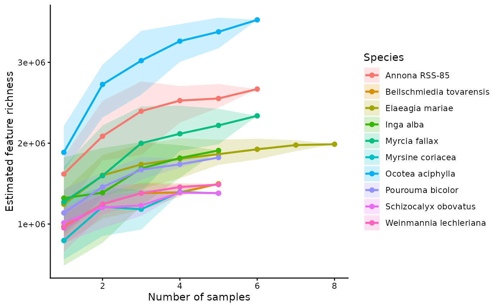
Rarefying the structure-aware diversity estimates can help distinguish species that have both high chemical diversity and broad structural coverage from species whose diversity saturates quickly as more samples are added.
Key takeaways
This workflow begins with standard feature-based summaries and then extends them by introducing information about structural similarity among compounds. That progression is especially important in interspecific studies, where exact feature overlap is often low even when samples are chemically related at the pathway or structural-class level.
In practice, it is often useful to compare both feature-based and structure-aware results side by side. When the two approaches agree, that strengthens the biological interpretation. When they differ, the discrepancy can reveal that species are producing different but related compounds.